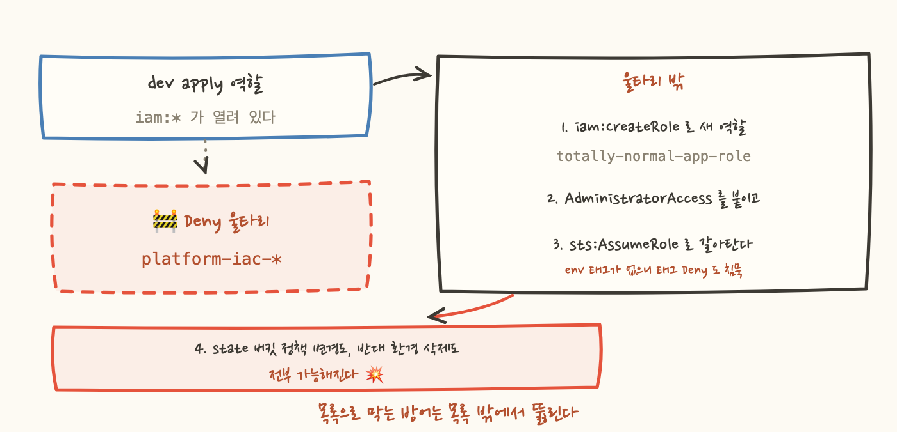
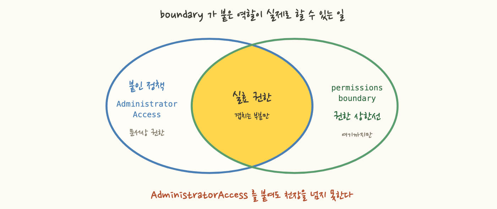

GitHub Actions 가 terraform apply 를 돌릴 때 쓰는 역할(이하 apply 역할)에 iam:* 를 열어야 했어요. 이 역할에 붙인 PowerUserAccess 에는 IAM 이 빠져 있는데 Terraform 은 대부분의 스택에서 역할을 만들어야 하니까요. 대신 안전장치를 하나 뒀습니다. 파이프라인 자기 역할들(platform-iac-* 프리픽스)에 대한 iam:* Deny 였죠. 이걸로 충분해 보였어요.
설계 리뷰에서 네 줄로 반박당했습니다. 목록으로 막는 방어는 목록 밖에서 뚫립니다.
이 저장소는 단일 AWS 계정에서 dev 와 prod 를 3중 방어로 갈라놨어요. 환경별 state 파일 경로 분리, 리소스의 env 태그가 자기 환경과 다르면 손대지 못하게 하는 IAM Deny, prod 리소스의 prevent_destroy 입니다. 그런데 이 세 겹이 iam:* 하나로 통째로 무력화됩니다.
순서는 이래요. ① iam:CreateRole 로 새 역할을 만듭니다. 이름은 totally-normal-app-role 로 지었습니다. 프리픽스 목록 밖이니 Deny 가 침묵해요. ② 거기에 AdministratorAccess 를 붙이고 신뢰 정책에 자기 자신을 넣습니다. ③ sts:AssumeRole 로 갈아탑니다. 새 역할에는 env 태그가 없으니 태그 Deny 도 침묵해요. ④ 이제 state 버킷 정책 변경도, 반대 환경 리소스 삭제도 가능합니다.
악의를 전제해야 성립하는 시나리오가 아니에요. 실수로 든 모듈 하나, 잘못 붙인 관리형 정책 하나로도 똑같은 상태가 됩니다. 이 실패의 모양은 "목록에 그 이름이 없었다"였어요. 그래서 목록을 넓히는 수리는 뺐습니다. 다음 이름 하나로 또 뚫리니까요.

첫 겹은 싱거워요. apply 역할에 sts:AssumeRole 을 명시적으로 Deny 하면 시나리오 ③번이 그 자리에서 끊깁니다. apply 역할이 다른 역할로 갈아탈 이유도 없어요. provider 에 assume_role 설정이 없으니 쓰지 않는 권한을 회수하는 셈이죠.
다만 경로 하나를 막은 것이지 원인을 없앤 건 아니에요. 만들어진 관리자 역할은 그대로 남고 다른 경로로 쓰이면 다시 열리니까, 두 번째 겹이 필요했어요.
permissions boundary 는 이름이 오해를 부르는 장치예요. 권한을 주는 정책이 아니라 권한의 상한을 정하는 정책입니다. boundary 가 붙은 역할이 실제로 할 수 있는 일은 붙은 정책과 boundary 가 둘 다 Allow 한 것뿐이고, 어느 한쪽에 Deny 가 있으면 그 Deny 가 이깁니다. 그래서 그 역할에 AdministratorAccess 를 붙여도 boundary 를 넘지 못해요. 문서상 권한과 실제 권한이 갈리는 거죠(그 역할을 principal 로 지목한 리소스 기반 정책 같은 예외는 있어요).
여기서 방어의 성격이 바뀝니다. 울타리는 무엇을 붙였는지 감시하는 방어였고, boundary 는 무엇을 붙여도 넘을 수 없는 천장을 두는 방어예요. 감시할 이름 목록이 없으니 역할 이름이 무엇이든 성립합니다.

천장을 만들어놔도 boundary 를 안 붙이고 역할을 만들면 소용없죠. 그래서 apply 역할 쪽에서 강제합니다. 구멍이 다섯 자리예요.
여섯 액션 모두 이 조건 키를 지원해요. 생성 쪽에서는 요청에 담긴 boundary 를, 부착 쪽에서는 대상 역할에 이미 붙어 있는 boundary 를 봅니다. 그래서 "일단 만들고 정책만 나중에 붙이기" 우회로도 닫혀요.
그리고 진짜 핵심은 연산자입니다. StringNotEquals 는 요청 컨텍스트에 그 조건 키가 없을 때도 true 예요. 비교할 값이 없으니 "같지 않다"가 성립하는 거죠(부정형 연산자 전체가 그래요). 그래서 "boundary 를 지정하지 않은 CreateRole"도 이 Deny 에 걸려요. 이 성질을 모르고 강제를 짜면 "아예 안 넣으면 통과"라는 구멍이 남습니다.
거꾸로 이 성질이 방해가 될 때도 있어요. 조건 키가 없으면 통과시키고 싶다면 StringNotEqualsIfExists 처럼 ...IfExists 를 붙입니다. 키가 요청에 있을 때만 비교하고, 없으면 그 조건절을 없는 것처럼 넘겨요. 그러니까 boundary 강제에 IfExists 를 붙이면 막고 싶었던 바로 그 경우가 통과합니다. 붙일지 말지는 습관으로 정하지 말고 "키가 없는 요청을 막아야 하나, 통과시켜야 하나"로 정하세요.
boundary 의 천장 자체는 Allow * on * 로 열어둡니다. 실제 권한은 붙는 정책이 정하고 boundary 는 넘지 못할 선만 그으면 되니까요. 그 위에 Deny 를 얹습니다.
IAM 쓰기는 접두사로 막았어요. 대상은 iam:Add* Attach* Create* Delete* Detach* Put* Remove* Set* Update* Upload* 입니다. 열거식 denylist 는 작성한 시점에만 완전하고, AWS 가 새 액션을 추가하면 그날부터 구멍이니까요. 접두사는 같은 동사로 시작하는 미래의 액션까지 덮습니다.
그럼 접두사도 결국 목록 아닌가요? 맞아요, 새 동사로 시작하는 쓰기 액션이 생기면 놓칩니다. 차이는 그 목록의 값을 누가 정하느냐예요. 액션 이름은 AWS 가 정하고 공격자가 고를 수 없지만, 역할 이름은 공격자가 그 자리에서 지어냅니다. 울타리가 뚫린 건 목록이라서가 아니라 그 값을 공격자가 골랐기 때문이에요.
읽기(Get*/List*)와 iam:PassRole 은 남겼습니다. PassRole 이 구멍처럼 보이지만, 이 파이프라인이 만드는 역할은 전부 boundary 를 지나야 만들어지니 넘겨줘도 천장이 유지돼요(계정에 이미 있던 boundary 없는 역할은 예외고요). 반대로 막으면 ECS 태스크 역할 같은 정상 패턴이 깨집니다. 여기에 sts:AssumeRole Deny, state 버킷 전면 Deny, 반대 환경 태그 Deny 를 더해 격리를 하위 역할까지 상속시켰어요.
그래서 이 방어는 재귀적으로 닫힙니다. 만들어진 역할이 또 역할을 만들려 해도 boundary 가 iam:Create* 를 막아요.
공짜는 아니에요. 이제 모든 aws_iam_role 에 permissions_boundary 를 넣어야 하고, 빠뜨리면 apply 가 CreateRole 단계에서 AccessDenied 로 실패합니다. 조용히 통과하는 것보다 낫다고 봤지만, 첫 모듈을 쓰는 사람이 원인을 모르면 시간을 잃죠.
boundary 가 막는 것 중 나중에 정상적인 필요가 생길 것도 있어요. 크로스 계정 접근이 필요해지면 sts:AssumeRole Deny 를 좁혀야 하죠. 다만 리소스가 0개인 지금은 엄격하게 시작해 필요할 때 좁히는 쪽이, 느슨하게 시작해 조이는 쪽보다 안전해요.